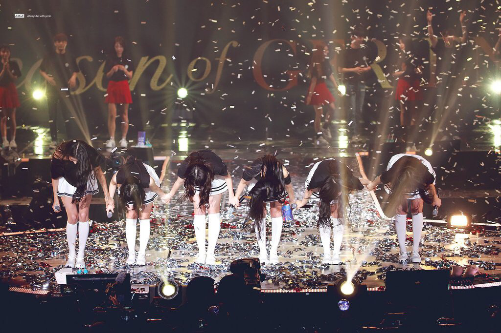

그룹 <여자친구>가 오는 8일과 9일 이틀간 서울 올림픽공원 SK핸드볼경기장에서 앵콜콘서트를 열 계획이다.
여자친구는 지난 1월에 첫 번째 단독콘서트를 성공적으로 개최했으며 연달아 아시아투어로 그 열기를 이어갔다. 여자친구는 지난 콘서트 이후 두 개의 앨범을 발표했으며, 해당 곡들을 이번 앵콜콘서트에서도 선보일 것으로 예상되고 있다. 또한 여자친구는 공식 SNS를 통해 "물꽃놀이"의 밴드버전 연습 영상을 짧게 공개하는가하면 스페셜 무대가 포함된 셋리스트를 일부 보여주기도 하며 버디들의 기대감을 높였다.
한편 여자친구는 2015년 1월 16일 "유리구슬"로 데뷔하여 큰 사랑을 받으며 현재까지 활발한 활동을 이어오고 있다.